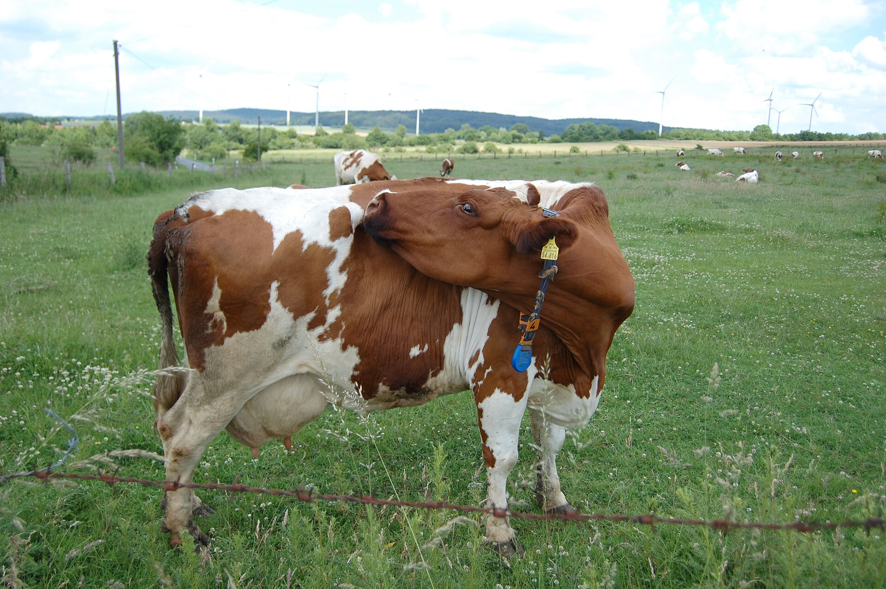

The Olive Grove Project
The Olive Grove ProjectA Herd Sized by Science, Not by Wishes
Most farm-cattle plans start with the exciting number — how many cows — and work backwards to reality, discovering the water bill later. We're doing it in the honest order: water first, herd second. Everything below is built on published dairy science, and every claim carries its source.


The science of a thirsty animal
A dairy cow is, biologically, a water-processing plant with legs. The verified numbers:
- Normal conditions: a productive dairy cow drinks 60–120 liters per day (industry monitoring data); US university extension puts lactating Holsteins at 18–40 gallons (68–151 liters).
- Heat stress: intake rises 20–50% — a 2026 systematic review of 17 studies found heat-stressed lactating Holsteins drink about 10 extra liters daily, increasing by roughly 1.5 liters per Temperature-Humidity-Index unit. High producers on hot days reach 150–200 liters.
- The milk rule: 4–5 liters of water per liter of milk. A cow giving 40 liters of milk in summer can legitimately need 160–200 liters of water that day.
- When it starts to hurt: milk production and welfare decline from a THI of 68, with clear heat stress above 72. A Tunisian summer does not negotiate with that number — design does.
Sources: University of Nebraska–Lincoln Extension (dairy water requirements); smaXtec dairy-monitoring literature; Jodoco heat-stress guidance; 2026 meta-analysis on heat-stress water intake in lactating Holsteins (17 studies).
What this means on 16 Tunisian hectares
Run the arithmetic and humility appears quickly: ten lactating cows drink on the order of a tonne of water per day — every day, summer and winter, before the young olive trees drink anything. That is why the roadmap is sequenced the way it is: the well (Phase 2) gets drilled, measured and paid for before a single cow is budgeted. The herd size will be written after the well's measured yield — published here, with the math shown.
| Commitment | What it means in practice |
|---|---|
| Water | Drinking water available at all times; flow rates matched to how fast a herd actually drinks after milking (cows drink together — slow troughs are a hidden production killer) |
| Shade | Every animal, every hot hour — shade structures budgeted with the barn, not added after a summer loss |
| Heat plan | THI tracked through summer; ventilation, water and feeding times adjusted before stress, not after |
| Breeding | Breed and crossbreeding choices weighted for heat tolerance and forage efficiency in a Mediterranean climate — decided with local veterinary and agronomic advice, published here |
Why cattle at all?
Because olives and milk are a classic Mediterranean pair: the herd converts forage and by-products into daily income while the trees take their patient years to full production (see the honest olive timeline), and well-managed manure returns to the grove as fertility. The cattle are the bridge across the olive tree's long childhood — that's the whole economic logic, and it only works at a size the water can honestly carry.
Frequently asked questions
How much water does a dairy cow drink per day?
60–120 liters normally; 20–50% more in heat, with high producers reaching 150–200 liters on hot days. Rule of thumb: 4–5 L of water per liter of milk.
At what temperature do dairy cows suffer heat stress?
By the Temperature-Humidity Index: production and welfare decline from THI 68, clear stress above 72. Tunisian summers demand shade, constant water and heat-aware feeding by design.
How big will the herd be?
Exactly as big as the measured water and the land's feed can carry — the number gets published here with the math, after the well is drilled. Not one cow bigger.
What are the animal-welfare commitments?
Shade for every animal, water at all times with adequate flow, THI monitoring through summer, and a barn budgeted before the herd. Comfort is the production model, not a luxury.
First things first: the herd follows the well, the well follows the grove — and the grove is live right now at $10 a tree. Follow the whole roadmap on the projects page →